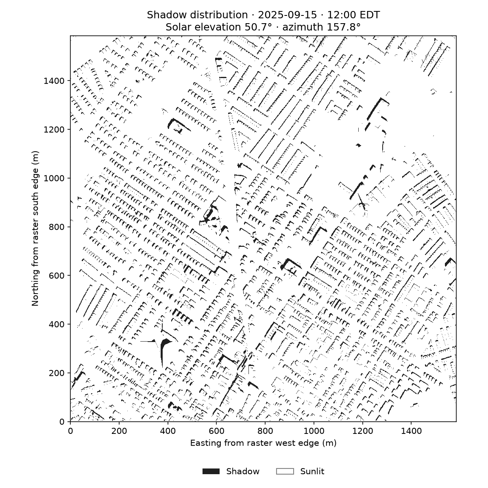

Mapping / Academic project
Philadelphia Shadow Simulation
How shade changes through the day.

12:00 EDT · September 15, 2025
Hourly shadow simulation01 / QUESTION
How does the pattern of shade change across a Philadelphia surface-model tile during the day?
02 / APPROACH
Adapted from Xiaojiang Li’s PyCUDA course notebook, the analysis uses a digital surface model and solar elevation and azimuth inputs to calculate sunlit and shadowed pixels. Python coordinates the raster processing and CUDA ray casting. Elevations and pixel spacing are converted to meters using an assumed US-survey-foot source unit, with a grid-convergence adjustment for the sun direction.
03 / RESULTS
Ten hourly shadow maps from 08:00 to 17:00 EDT on September 15, 2025, plus an animation showing the changing shadow pattern. The notebook and exported images are available for inspection.
04 / MY CONTRIBUTION
Course-notebook adaptation, hourly scenario setup, unit and sun-direction handling, and output presentation.
05 / WHAT THIS DOES & DOESN’T ESTABLISH
This is a deterministic spatial simulation, not machine learning: it has no model training or learned parameters. It adapts Xiaojiang Li’s course notebook and covers one DSM tile on one day. Vertical units are assumed because the input does not specify them, and objects outside the tile cannot cast shadows into it. No ground-truth accuracy assessment or CPU/GPU speed benchmark is reported.